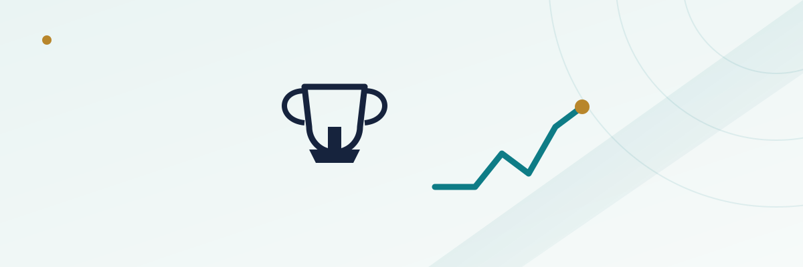

NBA Futures: How Championship and MVP Odds Move Across a Season

An NBA championship future looks static compared to a point spread — the number can sit on the board for weeks without moving — but that stillness is deceptive. Underneath it, a book is running a projection across 82 games and up to four playoff rounds, and that projection gets recalculated constantly even when the posted price hasn't changed yet. The trade deadline, a torn ACL, an eight-game win streak in January: each one forces a real re-pricing, just not always in public view the moment it happens. Knowing which events actually move the number, and by how much, is what separates someone who bets a preseason future once and forgets about it from someone who treats the futures board as a market worth watching all season.
In this guide
What's actually on an NBA futures board
The core markets are championship (all 30 teams), conference winner (Eastern and Western), and division winner, plus a season win total for every team, usually posted as a half-number like 45.5 to avoid a push. Alongside those sit the award markets: MVP, Defensive Player of the Year, Sixth Man of the Year, Most Improved Player, Rookie of the Year, and Coach of the Year. A few books also post an in-season tournament winner and a "make the play-in" or "miss the playoffs entirely" line for teams sitting near the bubble.
What separates all of these from a same-day bet is duration. A championship future posted in October doesn't settle until mid-June, meaning the ticket sits live through an entire regular season, a full round of play-in games, and four rounds of a playoff bracket that can each run seven games. That's roughly eight months of a single number carrying real market risk for the book that posted it.
How preseason championship odds get built
Books start with a power rating for each roster, built from the prior season's point differential and efficiency numbers, then adjusted for offseason trades, free-agent signings, coaching changes, and returning injuries. That rating feeds a simulation — often run tens of thousands of times — that plays out the regular season, seeds the playoff bracket, and simulates each series using the two teams' relative strength plus a home-court adjustment. The simulation's output for "percentage of simulated seasons this team wins the title" gets converted into the posted odds, with the book's margin layered on top.
This is also why preseason title odds compress into a small handful of true contenders and then spread out fast. A team given a 20% simulated title probability might price at +400, while a team at 2% prices closer to +5000 — the gap in dollar odds is much larger than the gap in raw skill, because championship probability compounds across four playoff rounds a modestly weaker team is less likely to survive.
Why the vig is so much wider than a single game
A same-day NBA point spread typically carries a hold in the 4-5% range. A full 30-team championship board routinely implies a total probability well north of 100%, because the book doesn't need both sides of a market to be balanced the way it does on a two-way spread — it just needs the total handle across every team to cover whatever it pays out to the eventual champion.
| Market | Typical implied hold |
|---|---|
| Single-game point spread (-110/-110) | Roughly 4.5% |
| Conference winner board (15 teams) | Often 15-20% |
| Full championship board (30 teams) | Often 25-35%+ |
| MVP award market | Often 40-60%+, since only a handful of realistic candidates get short prices |
The MVP number stands out precisely because so few players are true candidates — once a book prices the top five or six names tightly, everyone else on the board is priced as a long shot with almost no realistic chance of winning, which is why the sum of implied probabilities across an MVP board tends to run even higher than a championship board.
The five events that move futures mid-season
Unlike a point spread, which re-prices within minutes of new information, futures move in discrete jumps tied to specific news events rather than continuously. The five that matter most:
- The trade deadline (typically early-to-mid February): the single biggest catalyst on the calendar. A star moving teams can shift both franchises' title odds by several multiples overnight.
- A significant injury to a top-15 player: particularly a long-term injury to a franchise cornerstone, which can cut a contender's title price roughly in half or worse depending on severity and expected recovery timeline.
- An extended win or loss streak: an 8-10 game streak in either direction moves a team's simulated title probability meaningfully, since it updates the model's read on how good the roster actually is relative to its preseason projection.
- A coaching change: in-season firings are less common than in other leagues but do happen, and the market reaction depends heavily on who the interim or new coach is.
- Play-in and seeding clarity as the regular season closes: once a team's playoff seed and first-round matchup are effectively locked, its title odds adjust to reflect the specific opponent ahead rather than a generic bracket projection.
A worked example: a contender loses its best player
Say a team opens the season at +550 to win the championship, reflecting a top-four simulated title probability. Twenty games in, its best player suffers a season-ending injury. The simulation immediately drops that team's power rating sharply — not just because one player is gone, but because the model has to reallocate that player's minutes and usage to a lower-rated supporting cast for the rest of the projected season and playoffs. The title price might move from +550 to +2500 or longer within a day of the injury being confirmed, since the book has to re-run its simulation with a materially different roster for the remaining ~60 games and any postseason run.
Anyone holding a ticket at the original +550 keeps that price regardless of what happens afterward — the ticket doesn't get worse, it just becomes very unlikely to cash. That's the flip side of futures betting: the number you locked in is fixed, but the team's actual odds of winning can move dramatically underneath it, for better or worse, without your payout ever changing.
MVP odds behave differently — here's why
Championship odds are driven almost entirely by roster quality and matchup math. MVP odds are driven by that plus a layer of voter narrative that doesn't reduce cleanly to a simulation. Voters have historically leaned toward players on winning teams, players putting up historically notable per-game numbers, and players with a compelling season-long storyline — a return from injury, a first deep playoff push, a statistical milestone chase. Two players with statistically similar seasons can carry very different MVP prices depending on which team is winning more games and which storyline the media has centered that month.
That narrative layer is also why MVP favorites change hands more often in-season than championship favorites do. A player can lead the MVP odds in December, cool off statistically or see his team's record slip in January, and drop several spots on the board by February, even without any injury at all — pure performance and team-record drift is enough to move this specific market in a way it usually isn't enough to move a championship board.
Timing and staking notes
Futures money is committed for the length of the bet, with no interim payout unless your sportsbook specifically offers a cash-out feature — and cash-out prices on futures tickets are typically well below true expected value, since the book is buying back your action at a discount to itself. Treat futures stakes as money you won't touch again until the market settles, and size them with your overall bankroll in mind rather than as a same-day wager you can simply let ride. For more on how to size any individual bet against your total bankroll, see our bankroll management guide, and for the mechanics of how spreads and totals work before layering futures on top, see our NBA betting guide.
It's also worth shopping futures prices across more than one sportsbook before placing a bet. Because each operator runs its own simulation independently and none of them benefit from heavy, balanced two-way action the way a same-day spread does, it's common to see a meaningfully different number for the same team's title odds or the same player's MVP price across two or three books at any given point in the season.
Frequently asked questions
Do NBA championship odds update every time a game is played?
Not continuously the way a live point spread does. Books recalculate their models regularly, but the posted futures price usually only moves in a visible jump after a notable event — an injury, a trade, or an extended winning or losing streak — rather than after every single game result.
Can I bet a team's championship odds after the trade deadline?
Yes, futures markets stay open through the regular season and into the playoffs for teams still alive, though the number of realistic outright contenders naturally narrows as the field gets eliminated, and any remaining prices reflect that much smaller field.
Why do MVP favorites change more often than championship favorites?
MVP voting leans on subjective narrative factors — team record, storylines, and statistical milestones — on top of pure performance, so shifts in a player's monthly production or his team's win streak can move his MVP price without any injury or roster change at all.
Is it better to bet MVP or championship futures before the season or midway through?
There's no single right answer. Preseason prices are set with the least information the market will ever have, which can mean better value on an underrated team or player, but midseason prices reflect real results and are generally more accurate, even though the best odds on an eventual winner have usually already shortened by then.
Why do implied probabilities on a full championship board add up to well over 100%?
Because the sportsbook isn't trying to balance two sides of a market the way it does on a point spread — it needs the total money bet across all 30 teams to cover the payout to whichever one wins, which is achieved by building in extra margin across every outcome on the board.